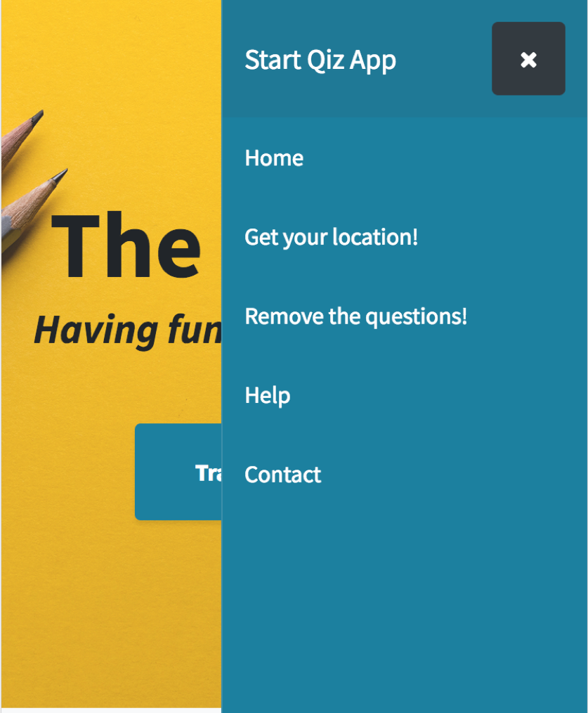
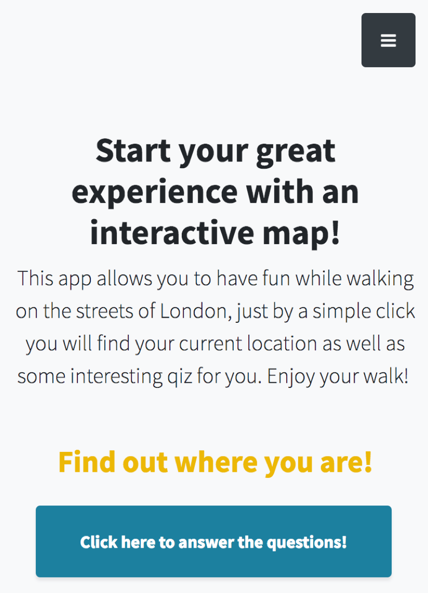
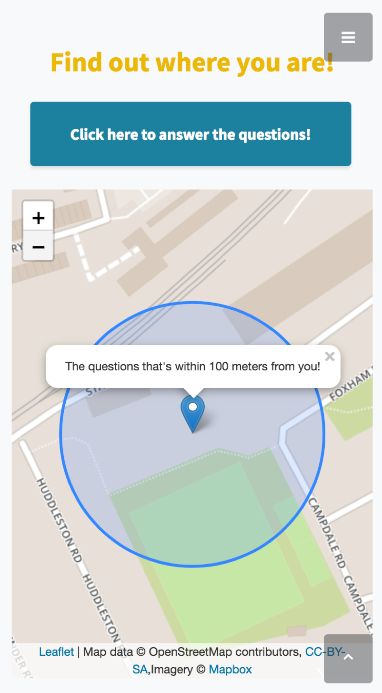
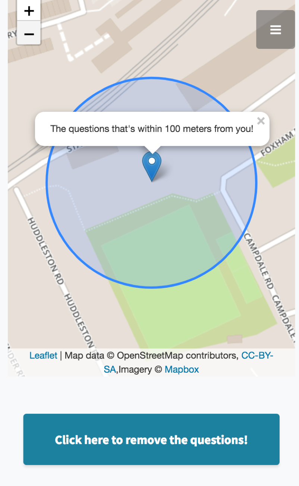
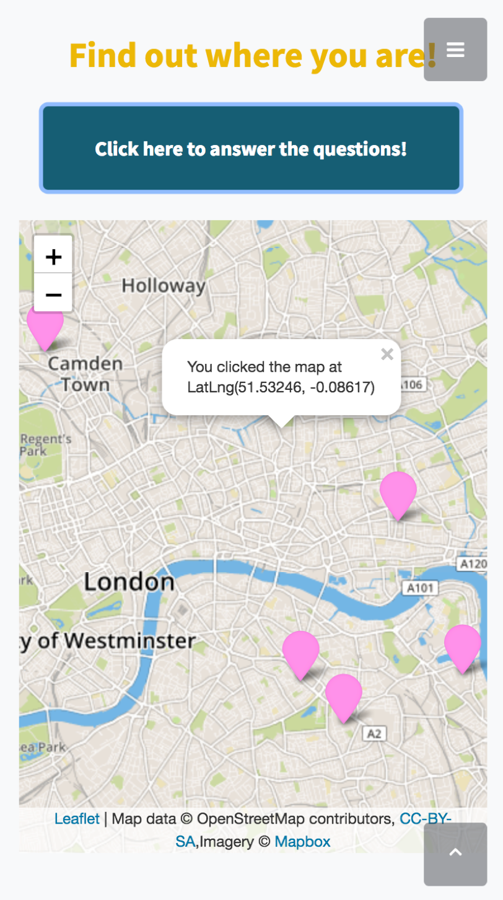
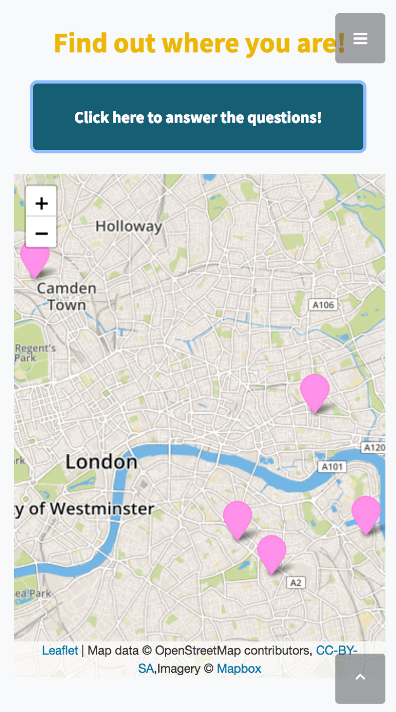
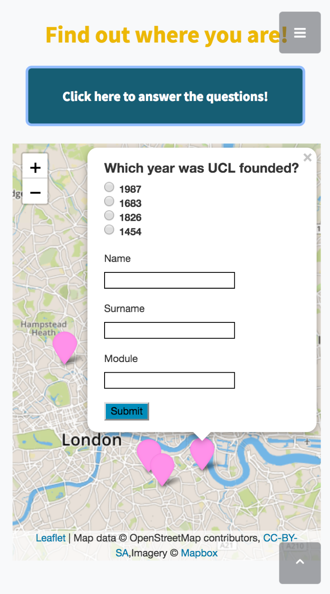
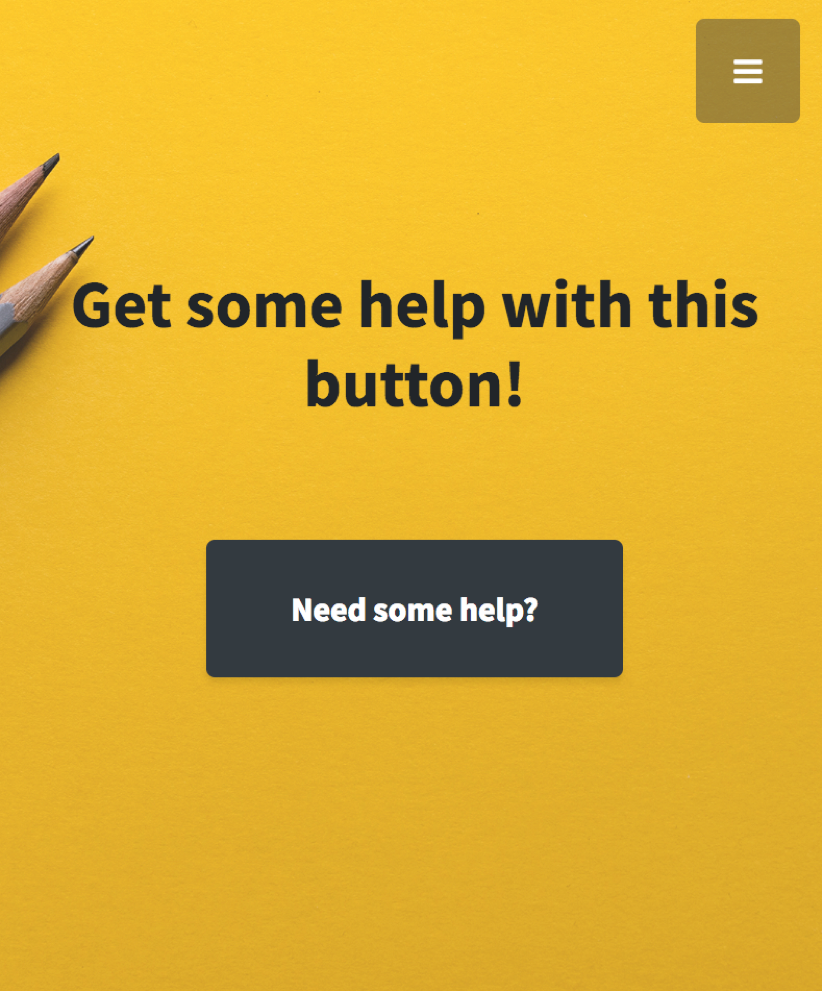

You will find a navigator on top of the app, it will guide you to each section that you want!

You will get a button that can click and bring to where you are and start playing the qiz!

The map will automatically show you where you are and the area that's 100 meters radius from you.

There's a button under the map that can use to remove the questions and start over again.

Question will popup and then you would also be able to click on the map and find any location coordinates that you want!

Button above the map will need to be clicked to start playing the qiz.

You will be able to click on the icon to answer the questions and submit it with your personal info.

The help button will guide you to this page!
